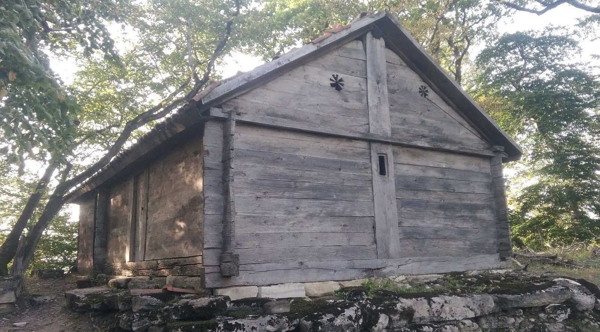

ბლოგები
ეთო-ეხვევი
სოფელი ეთო-ეხვევი მდებარეობს საჩხერის რაიონში, სოფ. ცხამის ჩრდილო-დასავლეთით 650-750 მ ზღვის დონიდან. სოფლები საჩხერეს და მის სხვა სოფლებს უკავშირდებიან სოფ. სავანის გავლით (საჩერიდან 7კმ.) და სოფ. ჭალიდან (მდ. ყვირილიდან) საფეხმავლო გზითა და ხიდით. გზის ნაწილი ბეტონსაფარითაა დაფარული, რომელიც არ არის დიდი ხანი რაც ადგილობრივმა თვითმმართველობამ უზრუნველჰყო. მოსახლეობის რაოდენობა ოფიციალურად დათვლილი არ არის, თუმცა ამჟამად ეთოში 14, ხოლო ეხვევში 13 ოჯახი ცხოვრობს. სოფლებს სისტემატურად ადგილობრივებისგან დატოვება თითქმის არ აღენიშნება.
მეტის წაკითხვაბარბაწიმნდა

„ბარბაწმინდა“ მდებარეობს მდინარე ძირულას ხეობაში, რომელსაც ისტორიულად ზემო ხეფინის ხევი ეწოდება. იქ არის ეკლესიები, ნატაძრალები, ციხის ნაშთები, იგი ხეობის ყველაზე დიდი და ყველაზე ძველი ნატაძრალია. ტაძარი ერთ-ერთი ყველაზე ძველია საქართველოში, რომელიც წმინდა ბარბარეს სახელზე აიგო. ნატაძრალის საკურთხეველს მხოლოდ ერთი შესასვლელი აქვს, რაც ასევე ძველი საეკლესიო სტილია და ძირითადად X საუკუნემდე აგებულ რამდენიმე ტაძარშია. ტაძარში შემორჩენილია ჩუქურთმიანი ქვები და დავითის ვარსკვლავი. გადმოცემით ტაძარს ათეიზმის ხანამდე გააჩნდა განძთსაცავი
მეტის წაკითხვაეთო-ეხვევი
სოფელი ეთო-ეხვევი მდებარეობს საჩხერის რაიონში, სოფ. ცხამის ჩრდილო-დასავლეთით 650-750 მ ზღვის დონიდან. სოფლები საჩხერეს და მის სხვა სოფლებს უკავშირდებიან სოფ. სავანის გავლით (საჩერიდან 7კმ.) და სოფ. ჭალიდან (მდ. ყვირილიდან) საფეხმავლო გზითა და ხიდით. გზის ნაწილი ბეტონსაფარითაა დაფარული, რომელიც არ არის დიდი ხანი რაც ადგილობრივმა თვითმმართველობამ უზრუნველჰყო. მოსახლეობის რაოდენობა ოფიციალურად დათვლილი არ არის, თუმცა ამჟამად ეთოში 14, ხოლო ეხვევში 13 ოჯახი ცხოვრობს. სოფლებს სისტემატურად ადგილობრივებისგან დატოვება თითქმის არ აღენიშნება.
მეტის წაკითხვა